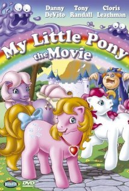

Op deze website laat ik jullie mijn favoriete films zien. Daar zaten jullie vast net op te wachten!
Nou, hier komen ze dan:
Een hartverwarmende film over vriendschap en gekleurde pony's die kunnen praten.
Er was eens een grote boot. Er zaten heel veel mensen op. Toen zonk de boot. Behalve dat bijna iedereen op de boot dood was, was het ook heel tragisch dat Kate Winslet haar kersverse geliefde kwijt was.
Een zeer educatieve film die je kinderen leert dat bananen ook maar mensen zijn.
Sint-Bernards zijn slimmer dan je denkt, dat zie je wel in deze film.